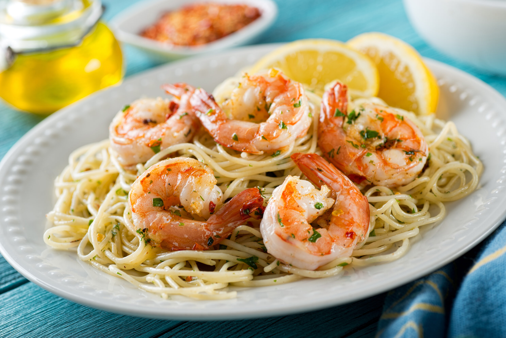

Shrimp Scampi

Description
This easy shrimp scampi recipe is a simple but elegant shrimp dish. Serve with lemon wedges, garlic bread, and a salad for a delicious dinner.
Ingredients
- 8 ounce of packaged angel hair pasta
- 1/2 cup of butter, or to taste
- 1 pound of shrimp, peeled and deveined
- 4 cloves of minced garlic
- 1 cup of dry white wine
- 1/4 teaspoon of ground black pepper
- 3/4 cup of grated Parmesan cheese
- 1 tablespoon of chopped parsley
- 4 lemon wedges
Steps
- Bring a large pot of lightly salted water to a boil. Cook pasta in the boiling water, stirring occasionally, until tender yet firm to the bite, 4 to 5 minutes. Drain; transfer to a serving bowl and keep warm.
- Melt butter in a large saucepan over medium heat. Stir in shrimp and garlic. Cook and stir until shrimp turns pink, 3 to 5 minutes. Stir in white wine and pepper; bring to a boil. Cook and stir for 30 seconds.
- Pour shrimp with sauce over pasta in the serving bowl; toss well. Sprinkle with Parmesan cheese and parsley. Serve with lemon wedges.
Back To Home